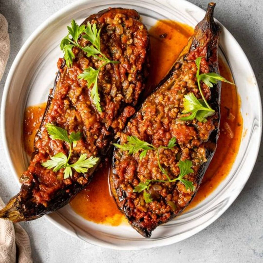

Karnıyarık

Description
Karnıyarık is a beloved Turkish comfort dish made by stuffing roasted eggplants with a savory mixture of ground beef, onions, and peppers, then baking it all together with a flavorful tomato-based sauce. The name “karnıyarık” translates to “split belly,” referring to the slit-down-the-middle eggplants that are filled with the rich, spiced meat mixture. Often topped with melted cheese and optionally garnished with tomatoes or green peppers, this dish is both hearty and satisfying. It’s a classic in Turkish home cooking and pairs beautifully with rice or bulgur pilaf.
Ingredients
- 4 eggplants (for stuffing)
- 4 tablespoons of vegetable oil
- 2 onions
- 250 grams ground beef (preferably lean beef)
- 3 green peppers
- 1 teaspoon tomato paste and 1 teaspoon pepper paste
- Spices (to taste: salt, black pepper, red pepper flakes, etc.)
- Half a Turkish coffee cup of vegetable oil
- Half a Turkish coffee cup of water
- 2 tablespoons of tomato paste (for sauce)
- 2 cups of water (for sauce)
Steps
- First, prepare the filling. Heat some oil in a pan and add finely chopped onions. Sauté until translucent.
- Add the ground beef and cook until browned.
- Add chopped green peppers, water, tomato and pepper paste, and spices. Let the mixture cook until well combined and softened.
- Once done, let the filling mixture cool.
- Peel the eggplants in a striped pattern and place them on a baking tray.
- Brush each eggplant with oil using a pastry brush.
- Roast in a preheated oven at 200°C (390°F) for 30 minutes until softened.
- After roasting, carefully cut a slit down the center of each eggplant.
- First, add a small amount of shredded cheese into each eggplant, then fill with the prepared meat mixture.
- Prepare the sauce by mixing 2 tablespoons of tomato paste with 2 cups of water and half a coffee cup of oil. Pour this sauce over the eggplants.
- Optionally garnish with green pepper slices and tomato rounds.
- Return to the oven and bake at 180°C (355°F) for another 10 minutes.
- Serve hot and enjoy!